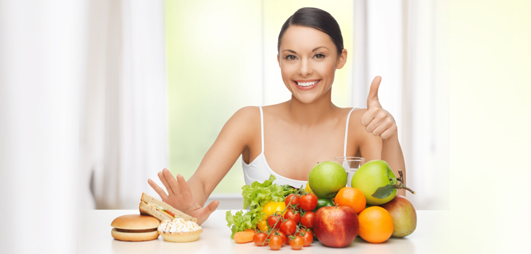
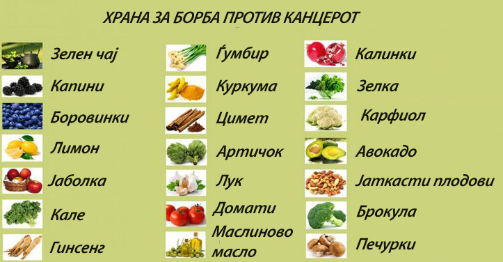
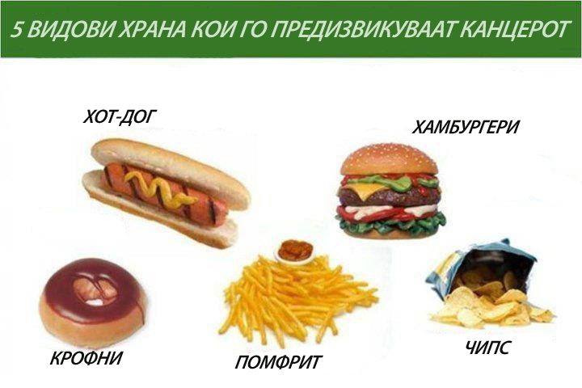

Еве еден пример за тоа како да направите комбинација на оброци.
| Појадок | Ручек | Вечера |
|---|---|---|
| 50гр.леб | 50гр.леб | варено јајце |
| 10гр.путер | 150гр.салата | варен компир |
| 10гр.мед | 200гр.компир пире | салата |
| 10гр.козјо сирење | месо варено | ориз |
| овошна салта | супа 200мл. | компот |
| компот или зелен чај | десерт: сутлијаш | јаболко или друго овошје |
ИСХРАНА НА ПАЦИЕНТИТЕ ПОСЛЕ ЛЕКУВАЊЕТО
Најчесто после завршувањето на третманот, доколку пациентите имале несакани ефекти тие почнуваат да се губат и полека се враќа интересот за храна. Со правилна исхрана после третманот се зајакнува организмот, се враќа силата и доброто расположение кај пациентот.
Дневниот оброк треба да биде разновиден со користење на сите групи на прехранбени производи, добро избалансирани кои ќе обезбедат доволно енергија,хранливи материи како и внес на витамини и минерали за добра функција на организмот.
Режимот на исхрана е многу важен и е во функција на правилно оптоварување на желудникот и неговата можност да ја обработи конзумираната храна и истата се абсорбира во целост. Целодневниот оброк треба да содржи: појадок, ужина, ручек, ужина и вечера. Главните оброци треба да бидат избалансирани, не многу големи. Последниот оброк да се зема до 20 часот. Ужините треба да се лесни, овошни, кашести во вид на пудинзи, компоти од овошје или овошни јогурти.
Што се однесува до млекото и млечните производи се смета дека ги прошируваат метастазите. Исто така и шеќерот. Забрането е секакво конзумирање на благо, чоколада и други прехрамбени продукти. Месото е дозволено меѓутоа не многу масно месо туку најдобро би било пилешко, телешко варено, бела риба варена или пржена со употреба на маслиново масло. Сувомеснатите производи и конзервираното месо не се препорачуваат. Се препорачува и варено јајце 2-3 пати на ден, но никако пржено. Од зеленчукот се дозволени сите видови на зеленчук, во дневна количина од 300гр. Од легуминозите се препорачува леќата, боранијата и грашокот. Доколку конзумирате компир најдобро е варен, но никако пржен со масло. Да се избегнуваат газирани и алкохолни пијалоци и се разбира, пушењето.
 НУТРИТИВЕН ДНЕВНИК
Треба слободно да се комбинираат намирниците со почитување на препораките за помали оброци, со практикување ужина и употреба на малку масти. Ако при конзумирање на некоја храна пациентот почувствувал одредени промени како надуеност, болка, пореметувања на столицата и слично, тоа се евидентира во дневникот со што може да се помогне во начинот на одбирање на намирниците, нивно комбинирање или начин на подготовка.
Treba slobodno da se kombiniraat namirnicite so po~ituvawe na preporakite za pomali obroci so praktikuvawe so u`ina i upotreba na malku masti. Ako pri konzumirawe na nekoja hrana pacientot po~uvstvuval odredeni promeni kako naduenost, bolka, poremetuvawa na stolicata i sli`no, toa se evidentira vo dnevnikot so {to mo`e da se pomogne vo na~inot na odbirawe na namirnicite, nivno kombinirawe ili na~in na podgotovka.
| Храна | Време | Коментар на проблемот |
|---|---|---|
| - | - | - |
| - | - | - |
| - | - | - |
| - | - | - |
| - | - | - |
| - | - | - |